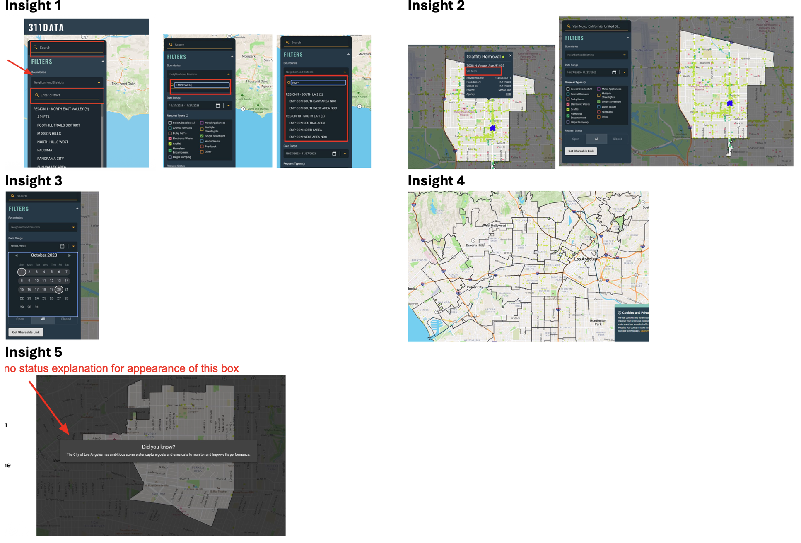
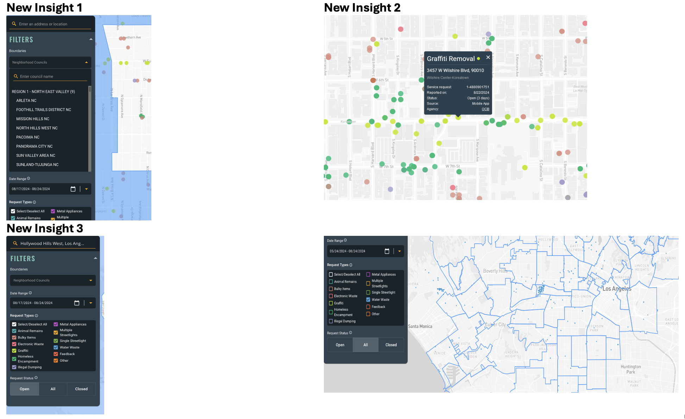

Iterative Usability Research for a Civic Data Platform

Overview
Hack for LA is a volunteer civic tech organization building digital tools for Los Angeles residents and community leaders. Their platform helps neighborhood council members — volunteer civic leaders across LA's 99+ councils — find resources, track events, and locate city contacts. I joined as a UX Researcher in December 2022 and led two rounds of usability research that identified 14 usability issues, drove three major feature redesigns (map, calendar, and search), and established the organization's first formal research process and roadmap — tools the volunteer team continued using long after the studies ended.
The Challenge
Hack for LA's platform had been built primarily by engineers and designers working in short volunteer sprints — without ongoing user research. Features had accumulated usability debt, especially for the core audience: neighborhood council members who are often civic volunteers with varied technical backgrounds. The research challenge was twofold: identify the most critical barriers for real users, and build a way to keep surfacing issues in an organization with no research budget and an entirely volunteer team.
Research Approach
Research was structured in two rounds — the first to surface issues with an internal team, the second to validate fixes and test with users who had no prior exposure to the platform.
| 1. Internal Bug Bash · November 2023 | 2. Expanded Usability Validation · June 2024 |
|---|---|
|
Participants: 5 internal 311Data team members · 30-min Zoom sessions Goal: Identify usability issues in map search, data visualization, and filtering before launch Research Objectives:
|
Participants: 5 Hack for LA members outside the 311Data team · 30-min Zoom sessions Goal: Verify Round 1 fixes, test with users who had no prior exposure to the platform, and identify new issues Research Objectives:
|
Round 1: What We Found

Finding 1 — Search Failed on Real User Input
5/5 users affectedThe platform had two search boxes (address search and boundary filter) with no clear distinction between them. Users couldn't find neighborhood councils by their common names — typing "Empowerment Congress" returned nothing because the system only recognized the abbreviation "EMP CON." Search history persisted after deselection, forcing users to manually clear input before starting a new search.
Finding 2 — NC Names Invisible on Map
5/5 users affectedUsers couldn't identify which neighborhood council a map area belonged to. Boundaries were shown but unlabeled — no hover state, no name overlay, and the NC name in request detail popups was small and buried under the address.
Finding 3 — Calendar Was Unintuitive
4/5 users affectedUsers couldn't type dates directly into the date range field and had to click through the calendar month by month. There was no confirmation after selecting a date range, and users kept making selection errors with no easy way to reset. The shortcut dropdown arrow went unnoticed.
Finding 4 — Request Pins Hard to Distinguish
5/5 users affectedColor-coded request dots (especially graffiti) blended into the map at certain zoom levels, and pins at NC boundary edges were difficult to see or attribute to the correct neighborhood.
Finding 5 — Loading Modal Confused Users
4/5 users affectedLong data loads triggered a "Did you know?" popup with no loading indicator. Users didn't understand why a fun fact appeared during their task — they expected a progress bar or spinner, not trivia.
Round 2: Tracking Resolution
Round 2 systematically re-tested Round 1 issues to track what was fixed, what persisted, and what new problems the redesign introduced.
| Problem | Priority | Problem Fixed? |
|---|---|---|
| Users cannot type Empowerment Congress | High | ✅ |
| Pop-up window: There was no status notification that accompanied the fun messages, especially when loading times were long, and this confused users | High | ✅ |
| Users cannot tell the NC name if they only know the address of the location | Medium | ❓ |
| Graffiti request color is hard to distinguish on the map and requests on the boundaries are hard to see/distinguish | Medium | ✅ |
| Users cannot tell the NC name easily from the request details | Medium | ❓ |
| It took a long time to load a large data request | Medium | ✅ |
| The layout of the calendar was not intuitive | Low | ❓ |
| It was inconvenient if users wanted to select a long period of time | Low | ❓ |
| Users were not sure what the request status meant, nor what the specific categories meant (all, closed, open) | Low | ✅ |
New Issues from the Redesign
New Issue 1 — Region Selection Confusing
3/5 users affectedUsers wanted to view the entire city but couldn't find a way to deselect an NC and zoom out. The dropdown had no "all" or "entire city" option, and users didn't realize that clicking the X on a selected NC name would zoom back out.
New Issue 2 — Request Hover Box Flicker
1 user affectedWhen moving between request dots, the popup briefly showed the previous request's information before updating — a small but disorienting flash.
New Issue 3 — Design Inconsistencies
ObservedFont types varied across the left-hand menu, and the "Water Waste" request color was too similar to the NC boundary color, creating visual confusion.

Impact
Product Impact
- 8 usability issues identified in Round 1; 5 confirmed fixed in Round 2, 4 tracked as persistent, 3 new issues surfaced from the redesign
- Persistent issues correctly diagnosed as information architecture problems (NC naming) vs. interaction pattern problems (calendar) — guiding the team toward the right type of fix
- Findings supported on-time public launch with documented evidence of iterative improvement
Research Operations Impact
- Established the team's first documented research process — templates and workflows that outlasted my involvement on the project
- Identified recruitment quality gaps during this project that led me to propose and establish a UserTesting platform partnership for the broader Hack for LA organization — improving recruitment efficiency across teams
- Defined the project's first research roadmap, giving the volunteer team a structured approach to ongoing user research
Key Learnings
Fixing the Surface Doesn't Fix the Structure
Three of the five Round 1 fixes addressed copy or visual treatments. The deeper structural issues — event information architecture, mobile touch targets, category labeling — only surfaced when we got outside the volunteer team. Internal testing surfaces what's immediately broken; external testing reveals what the product assumes about its users.
Research Infrastructure Outlasts Any Single Study
The issue taxonomy and research roadmap I built had a longer organizational impact than any individual finding. Months after the studies ended, team members were still using both tools to scope new research questions and report issues consistently — without a researcher in the room. The most durable research contribution isn't a report; it's a process that runs without you.
Two rounds of usability research drove three major platform redesigns and established Hack for LA's first formal research process — giving a volunteer-run civic tech team the infrastructure to keep improving their platform long after the studies ended.